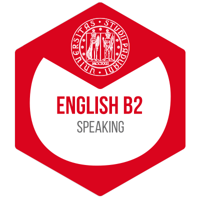

üéñÔ∏è Certifications & Badges
International Master's Degree in ICT For Internet and Multimedia
University Of Padova
February 2025
The holder or holder of this Badge has obtained an international Master's Degree in ICT For Internet and Multimedia from the University of Padua.

English B2 - Speaking
University Of Padova
January 2024
The Badge Linguistic suitability for CLA - English B2 - Speaking certifies the achievement of a level equivalent to B2 for this skill for the English language compared to the level expected by QCER (Common European Framework of Reference) or CEFR (Common European Framework of Reference for languages), the European system that defines the standard of language skills.